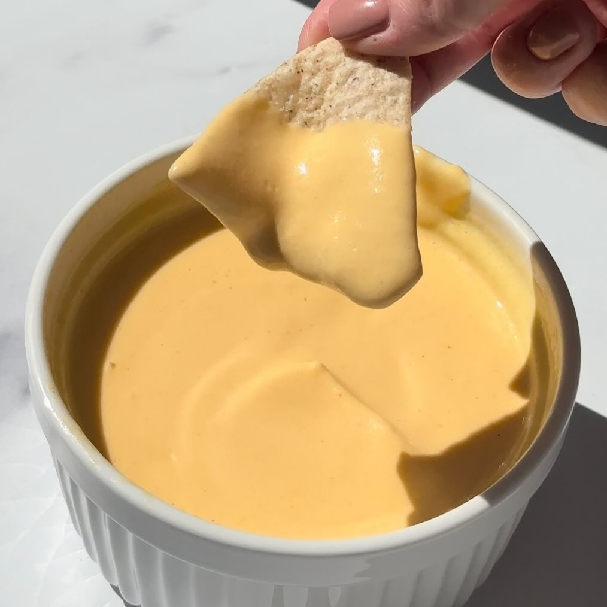

Queso para Nachos
Ingredientes:
- 1 taza de queso cottage
- ½ taza de agua
- 2 tazas de queso cheddar
- 1.5 cucharaditas de pimienta de cayena
- 1.5 cucharaditas de chile en polvo
- 1 cucharadita de paprika
- Tostitos, Totopos o lo que sea de tu preferencia para acompañar
Instrucciones:
- Licúa hasta obtener una mezcla suave.
- Luego, agrega el resto del queso cheddar y licúa nuevamente hasta que quede suave (puedes añadir
agua adicional según la consistencia que prefieras).
- Calienta en el microondas durante 30-60 segundos y revuelve.
- Disfruta con chips de tortilla o sobre tu comida favorita.